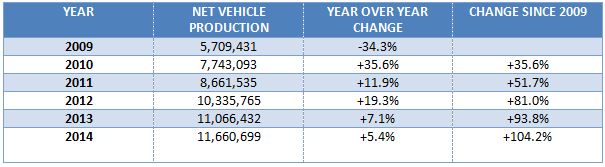
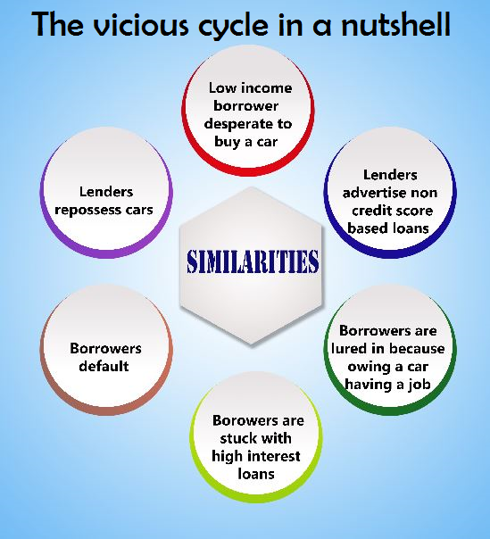
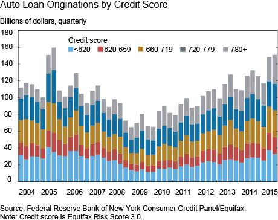
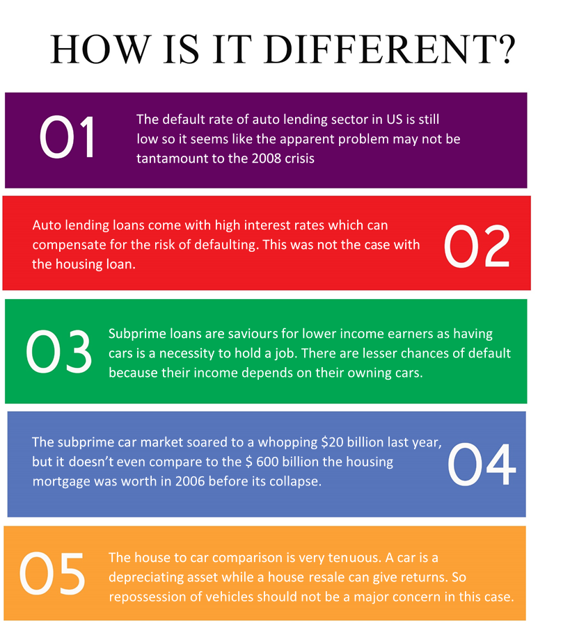

The alarm bells are ringing again and the ghost of the past looks set to pay a visit. As the world was getting rid of the venomous remnants of the subprime mortgage crisis of 2008, another bubble was slowly taking shape behind the curtains – subprime auto lending. The world of borrowing and lending has forever been fascinating and the driving force for free capital that promotes trade and commerce but when the ethics of this particular world are violated then the results are devastating. Let us walk you through the dangers that the world of borrowing is posing to the economy.
In order to understand why we’re making a big fuss about the whole borrowing scenario in the auto industry you need to understand the answer to two very important questions.
What are subprime loans?
The distinguishing factor between a prime rate loan and subprime loan is a borrower’s credit rating. A prime rate loan is offered to an individual with financial stability and a very low chance of default on the other hand a subprime loan is offered to everybody and anybody who applies for it. The catch however is that the rate of interest is a lot higher than the prime rate and the borrower gets caught in debt. In most cases the borrower ends up paying double or triple of the actual value of the commodity.
Who offers these subprime loans?
All financial institutions are free to offer loans at subprime rates but most subprime loans come from small establishments that target individuals with low credit ratings. The predatory nature of these establishments thrives on its borrowers need for capital and charges them unreasonably high rates. The fact that they know their borrowers are likely to default is an added advantage to them because they can then repossess the sold commodity and continue the vicious cycle of selling and repossessing.
Similarities between 2008 and the Current Crisis
A few months back, the news websites read that over 17 million new vehicles were sold in the year 2015, which happened to be the highest ever in the history of the United States. While a lot of experts said that it indicated the comeback of the US economy, they were clearly missing a major cause: credit expansion, which was the case with the 2008 crisis as well.

Source:OICA
Subprime car loans are worse than housing loans in a sense. Cars are a necessity for most American adults, rather than a luxury. Since the public transit system is a pain in most towns in the US, a lot of Americans see a direct link between owning a car and earning bread for a living. People are thus desperate to for an auto loan, since cars cost lesser. Unlike housing loans where the money was big, lower income borrowers are trapped into thinking that cars are affordable; and this is exactly what lenders take advantage of – their expertise in psychological manipulation helps them land a deal for the investors, who are hungry too. Similar to the mortgage crisis, no one wants to put an end to this subprime auto lending.
To sell more vehicles, dealers haven’t left any advertising method untouched; similar to the horrendous “liar loans” and “no-money down” loans of the 2008 crisis, a lot of incentivized loans have been designed to lure in customers. To boost business, most dealerships have witnessed a 14% rise in spending on sales incentives over the last year. The fact that people are falling prey to these rat-traps is evident when we look at some stats – auto loans have seen an increase of $80 billion since 2009 and about 20% of these loans today, go to individuals with credit scores below 620.


The prices of both used and new cars have shot up wildly (25% for used cars and 15% for new cars, since 2009) which, is the case with bubbles. This is majorly due to the reason that auto loans are deceptive; the lenders make it seem like small monthly payments over long periods of time but borrowers end up paying 150% of the original value of the car, on an average. In a particularly shocking case, a woman from Chicago was tricked into buying a $3000 dollar car, and ended up paying $13000 for the same. The interest rates in these loans are kept ridiculously high to compensate for the risk. And all this bears an uncanny resemblance with the housing crisis; in early 2007, the median size of a family house was 2,272 sq ft.
The auto bubble has yet to burst, but its negative effects are already starting to gradually appear. The non-performing loans in the sector have risen from 1% in 2010 to 2.6% in 2014. The defaulters list is on the rise, as it was during the later periods of 2007, and 17% of the borrowers are already facing repossession fees. At this rate, we are definitely looking at auto prices crashing soon enough just like we saw house prices fall in the mortgage crisis era. The crashing prices will lead to lesser recovery of the money lost from defaulting.
Information from some other sources indicates that the bubble has already started to burst. The growth in borrowing is dropping every month, and may slowly come to a standstill. Auto sales are at a low and the inventory to sales ratio is at its peak since August 2008.
The sector may be nose-diving into a dark age of losses. According to a study by DBRS Inc., 18% of auto-loan principal dollars securitized by subprime lenders in 2015 aren’t likely to be repaid. The US may be at the edge of a dangerous cliff protected only by the fact that the dollar value of the auto market is small. Things are way past the point of return at this moment.

In a recent study Equifax compared two groups of randomly selected borrowers with deep subprime credit scores (those below 550): members of one group took out a subprime car loan in 2010 while members of the other group didn’t. The first group – the car loan borrowers – actually saw their credit score rise 52 points, an improvement that was 62.5% better than that of the group that didn’t take out the car loan.
The greatest worry for the world isn’t subprime lending but the lack of discipline and ethics that the workforce behind this operation possess. The increasing competitive nature of the market has forced people into resorting to any plausible methods to generate revenue which further pushes them to consider riskier options that pay better. The question is – will the world economy be able to sustain the weight of our ever increasing greed that has already managed to crush our very spine of morals ?
-Written byHarsh Agarwal, Hitendra Pratap, Siddhant Laddha